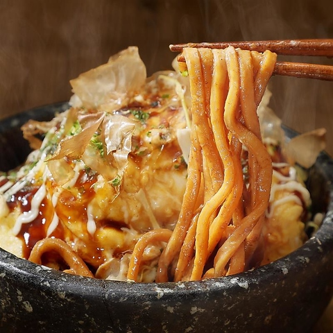
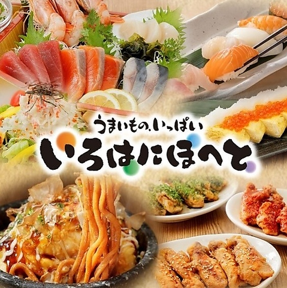
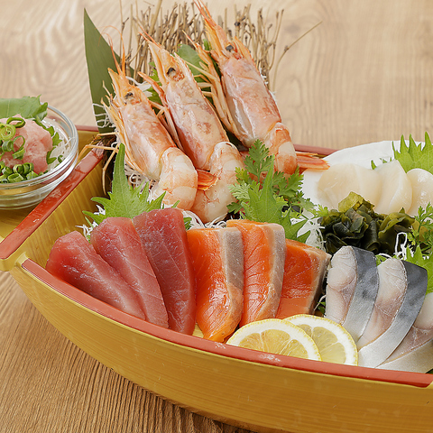

Photo Gallery
いろはにほへと 幣舞橋店とは
幣舞橋すぐ横の全国チェーン居酒屋。全国チェーンながら釧路産食材を活かしたメニューも揃い、幣舞橋を眺めながら飲める好立地が観光客にも便利。飲み放題コースが充実しており釧路の夜を気軽に楽しめる。
実食レビュー
幣舞橋すぐ横という釧路随一の好立地に入る全国チェーンの居酒屋。「幣舞橋直ぐ・ホテルラビスタ裏・河畔沿い」というアクセスの良さが観光客に便利で、無休で16:00から営業するため釧路観光後すぐに立ち寄れる。
飲み放題付きコース2,000円台から提供しており、グループでの宴会・観光客の夕食に手頃に利用できる。釧路の海鮮・ザンギなども揃い、全国チェーンながら釧路らしいメニューも楽しめる。
おすすめメニュー
- 飲み放題コース ¥2,000〜 — 2時間飲み放題付きコース。グループ宴会に最適
- 釧路産海鮮刺身 ¥900〜 — 地元産魚介を使った刺身盛り合わせ
- ザンギ（釧路スタイル） ¥700〜 — 釧路発祥の唐揚げ。ビールのお供に
- 幣舞橋夕日ハイボール ¥500〜 — 釧路名物夕日をイメージしたオリジナルドリンク
📎 最新情報は公式サイトをご確認ください
アクセス・予約
訪問のコツ
- 無休・16:00から営業。観光後に立ち寄りやすい
- 幣舞橋の夕日と一緒に楽しむのが釧路旅の特別な思い出になる
- ホットペッパーグルメでクーポン配信中。来店前に確認を